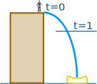
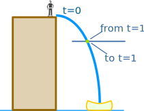
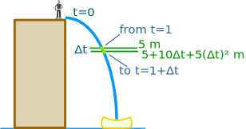
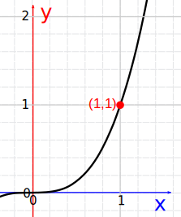
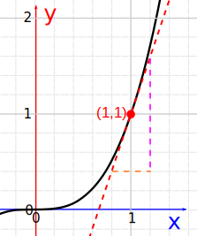

Introduction to Calculus
Calculus is all about changes.
|
Sam and Alex are traveling in the car ... but the speedometer is broken. |
"Wait a minute ..."
"Well in the last minute we went 1.2 km, so we are going:"
1.2 km per minute x 60 minutes in an hour = 72 km/h
"No, Sam! Not our average for the last minute, or even the last second, I want to know our speed RIGHT NOW."
"OK, let us measure it up here ... at this road sign... NOW!"
"OK, we were AT the sign for zero seconds, and the distance was ... zero meters!"
The speed is 0m / 0s = 0/0 = I Don't Know!
"I can't calculate it, Alex! I need to know some distance over some time, and you are saying the time should be zero? Can't be done."
That is pretty amazing ... you'd think it is easy to work out the speed of a car at any point in time, but it isn't.
Even the speedometer of a car just shows us an average of how fast we were going for the last (very short) amount of time.
How About Getting Real Close
But our story is not finished yet!
Sam and Alex get out of the car, because they have arrived on location. Sam is about to do a stunt:
|  |
Sam will do a jump off a 20 m building.Alex, as photographer, asks:"How fast will you be falling after 1 second?" |
Sam uses this simplified formula to find the distance fallen:
d = 5t2
- d = distance fallen, in meters
- t = time from jump, in seconds
(Note: the formula is a simpler version of falling due to gravity: d = ½gt2)
Example: at 1 second Sam has fallen
d = 5t2 = 5 × 12 = 5 m
But how fast is that? Speed is distance over time:
Speed = distancetime
So at 1 second:
Speed = 5 m1 second = 5 m/s
"BUT", says Alex, "again that is an average speed, since you started the jump, ... I want to know the speed at exactly 1 second, so I can set up the camera properly."

Well ... at exactly 1 second the speed is:
Speed = 5 − 5 m1 − 1 s = 0 m0 s = ???
So again Sam has a problem.
Think about it ... how do we figure out a speed at an exact instant in time?
What is the distance? What is the time difference?
They are both zero, giving us nothing to calculate with!
But Sam has an idea ... invent a time so short it won't matter.
Sam won't even give it a value, and will just call it "Δt" (called "delta t").
So Sam works out the difference in distance between t and t+Δt
At 1 second Sam has fallen
5t2 = 5 × (1)2 = 5 m
At (1+Δt) seconds Sam has fallen
5t2 = 5 × (1+Δt)2 m
We can expand (1+Δt)2:
So at (1+Δt) seconds Sam has fallen

In Summary:
So between 1 second and (1+Δt) seconds we get:
Change in distance over time:
So the speed is 10 + 5Δt m/s, and Sam thinks about that Δt value ... he wants Δt to be so small it won't matter ... so he imagines it shrinking towards zero and he gets:
Speed = 10 m/s
Wow! Sam got an answer!
Sam: "I will be falling at exactly 10 m/s"
Alex: "I thought you said you couldn't calculate it?"
Sam: "That was before I used Calculus!"
Yes, indeed, that was Calculus.
The word Calculus comes from Latin meaning "small stone".
· Differential Calculus cuts something into small pieces to find how it changes.
· Integral Calculus joins (integrates) the small pieces together to find how much there is.
Sam used Differential Calculus to cut time and distance into such small pieces that a pure answer came out.
And Differential Calculus and Integral Calculus are like inverses of each other, similar to how multiplication and division are inverses, but that is something for us to discover later!
So ... was Sam's result just luck? Does it work for other things?
Let's try doing this for the function y = x3
This will be similar to the previous example, but we will just use a slope on a graph, no one has to jump for this one!

Example: What is the slope of the function y = x3 at x=1 ?
We can expand (1+Δx)3 to 1 + 3Δx + 3(Δx)2 + (Δx)3, and we get:
y = 1 + 3Δx + 3(Δx)2 + (Δx)3
And the difference between the y values from x = 1 to x = 1+Δx is:
Now we can calculate slope:
Once again, as Δx shrinks towards zero we are left with:
Slope = 3

And here we see the graph of y = x3
The slope is continually changing, but at the
point (1, 1) we can draw a line tangent to the curve
and find the slope there really is 3.
(Count the squares if you want!)
Question for you: what is the slope at the point (2, 8)?
Try It Yourself!
Go to the Slope of a Function page, put in the formula "x^3", then try to find the slope at the point (1, 1).
Zoom in closer and closer and see what value the slope is heading towards.
Conclusion
Calculus is about changes.
Differential calculus cuts something into small pieces to find how it changes.
- Learn more at Introduction to Derivatives
Integral calculus joins (integrates) the small pieces together to find how much there is.
- Learn more at Introduction to Integration